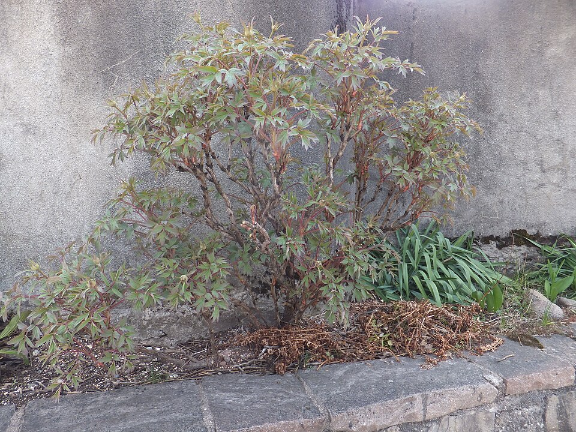

Mǔdānpí · Moutan Bark牡丹皮
Moutan Cortex · Heat-clearing herbs: herbs that clear heat and cool the bloodMoutan Cortex · 清热药·清热凉血药




- Flavour · nature性味
- bitter, acrid; slightly cold苦、辛，微寒
- Channels归经
- Heart, Liver, Kidney心、肝、肾经
- Direction升降浮沉
- Pungent and dispersing, bitter and draining, and slightly cold in nature. It enters the blood level to clear heat and cool the blood while invigorating circulation and dispersing stasis. It addresses both excess heat in the blood and yin-deficiency fever or blood stasis.辛散苦泄，微寒清热，入血分而清热凉血，并能活血散瘀；既可清血分实热，也可用于阴虚发热及瘀血内停。
- Toxicity毒性
- Non-toxic无毒
- Dose (pharmacopoeia)用量（药典）
- 6–12 g (ceiling 12 g)（上限 12 克）
Decocted, generally at 6–12 g. The raw form is commonly used for cooling blood and dispersing stasis. The specific processed form and method of use should follow pharmacopoeial standards and clinical pattern differentiation.煎服。一般用量为 6～12 g。清热凉血、活血化瘀，通常生用；具体炮制品种及用法应以药典和临床辨证为准。 - Pregnancy孕期
- Caution in pregnancy孕妇慎用 The 2020 Chinese Pharmacopoeia advises caution during pregnancy. Health Canada's TCMI monograph gives a stricter warning, stating that products containing this ingredient should not be used during pregnancy or breastfeeding. The pharmacopoeial term 'use with caution' must not be interpreted as permission for unsupervised use during pregnancy. Avoid relevant natural health products or herbal preparations containing Moutan Bark during pregnancy and breastfeeding, and seek assessment from a healthcare professional.《中国药典》2020 年版规定孕妇慎用。加拿大卫生部 TCMI 专论对该成分的风险提示更严格，要求孕期及哺乳期勿用。因此，不能因药典使用「慎用」而理解为孕期可以自行服用；妊娠及哺乳期间应避免使用含牡丹皮的相关天然保健产品或中药制剂，具体情况由医疗专业人员评估。
- Health Canada加拿大卫生部
- Health Canada: monograph加拿大卫生部：有专论 Health Canada's Natural Health Products Ingredients Database (NHPID) Traditional Chinese Medicine Ingredients monograph lists Paeonia suffruticosa (Mu dan pi, Cortex Moutan) in Table 1, general medicinal ingredients. The monograph requires product labelling to state that the ingredient must not be used during pregnancy or breastfeeding; people taking prescription medicines or having serious diseases or acute infections should consult a healthcare professional before use; and use should be discontinued and medical advice sought if symptoms persist or worsen. This ingredient is listed in Table 1 and should not be misrepresented as a restricted ingredient under Table 3 or Table 4.加拿大卫生部 NHPID《Traditional Chinese Medicine Ingredients（TCMI）》专论收录 Paeonia suffruticosa（Mu dan pi，Cortex Moutan），列于 Table 1：general medicinal ingredients（一般药用成分）。该成分专论要求产品标注以下风险语：孕期或哺乳期勿用；正在服用处方药、患有严重疾病或急性感染者，使用前咨询医务人员；症状持续或加重时停止使用并就医。该条目属于 Table 1，不应误写成 Table 3 或 Table 4 的限制性成分。
- Conservation资源与保护
- The medicinal material is the dried root bark of cultivated Paeonia suffruticosa. The supplied sources do not establish that Moutan Bark is an endangered or internationally trade-prohibited medicinal material, nor do they provide evidence that CITES trade restrictions apply. Procurement should focus on correct species identification, cultivated origin and quality standards; trade restrictions applicable to other protected animal or plant medicines should not be incorrectly applied to Moutan Bark.牡丹皮的药用来源为栽培牡丹的干燥根皮。本题所列来源没有提供其属于濒危或国际贸易禁用药材的证据，也没有提供需要适用 CITES 禁止贸易规定的依据。药材采购应注意物种鉴定、栽培来源及质量标准，不应将其他受保护动物或植物药材的贸易限制套用于牡丹皮。
- Source来源
- Paeonia suffruticosa Andrews. The dried root bark of Paeonia suffruticosa Andrews, family PaeoniaceaePaeonia suffruticosa Andrews（牡丹）。毛茛科植物牡丹的干燥根皮
Traditional actions and indications功效与主治（传统）
🏛 Traditional statements, not efficacy claims; the modern evidence is graded further down.以下为传统说法，不是疗效主张；现代证据见下文分级。
- Clears heat and cools the blood清热凉血
- Invigorates blood circulation and dispels blood stasis活血化瘀
Used for heat entering the nutritive and blood levels, macular eruptions caused by warm toxins, vomiting or bleeding from the nose due to blood heat, fever that develops at night and subsides by morning, steaming bone fever without sweating, amenorrhea, dysmenorrhea, traumatic injuries with pain, and sores or swellings. It is valued for cooling blood without retaining stasis and dispersing stasis without aggravating heat.用于热入营血、温毒发斑、血热吐衄、夜热早凉、无汗骨蒸、经闭痛经、跌扑伤痛、痈肿疮毒。其清热凉血而不留瘀，活血散瘀而不助热，是治疗血分有热兼有瘀滞证的重要药物。
How to recognise it怎么认
Growing植株 A deciduous shrub approximately 1–2 metres tall, with thick roots and conspicuous root bark. The stems are upright with relatively stout branches. Leaves are alternate and usually twice ternately compound, with ovate to oblong-ovate leaflets that are often lobed or irregularly divided. Large solitary flowers grow at the branch tips in spring and may be white, pink or purplish red. The fruit consists of follicles that split open when mature. The medicinal part is the outer bark of the underground root, not the flowers, leaves or woody central root.落叶灌木，高约 1～2 米。根粗壮，具有明显的根皮；茎直立，枝条较粗。叶互生，通常为二回三出复叶，小叶形状变化较大，常呈卵形或长卵形，叶片通常有 2～3 裂或不规则分裂。花单生于枝顶，花大而显著，花瓣通常较多，颜色可为白色、粉红色、紫红色等；花期春季。果实为蓇葖果，成熟后开裂。药用部位不是花、叶或木质根心，而是地下根部的外层根皮。
Decoction pieces饮片 The slices are circular, irregularly circular or occasionally semicylindrical. The outer surface is greyish brown or yellowish brown, with longitudinal wrinkles and fine root scars. The inner surface is pale greyish yellow to light brown and relatively smooth, sometimes showing fine longitudinal striations. The cut surface is pinkish or pale reddish brown, powdery, and displays distinct radial markings; a darker cambium ring may be visible. The bark is relatively brittle and breaks easily. It has an aromatic smell and a slightly bitter, astringent taste. Identification should focus on its root-bark structure, pinkish cut surface and radial markings, distinguishing it from the woody central root.饮片呈圆形薄片或不规则形薄片，有时呈半圆筒状。外表面灰褐色或黄褐色，具有纵向皱纹及细根痕；内表面淡灰黄色或浅棕色，较平坦，有时可见细小纵纹。切面粉红色或淡棕红色，粉性，具有明显的放射状纹理，部分可见较深色的形成层环。质地较脆，易折断。气芳香，味微苦而涩。认药时重点观察其根皮形态、粉红色切面及放射状纹理，不应将其误认为牡丹木质根心。
No usable photo of the root bark; the only one on Commons did not look right and was rejected.缺牡丹皮饮片照；Commons 上唯一一张形色不像，已剔除。
Processing炮制
- Raw Moutan Bark生牡丹皮：: The bark is cleaned, washed, moistened, sliced thinly and dried. It is used to clear heat, cool the blood and disperse blood stasis.除去杂质，洗净，润透，切薄片，干燥。清热凉血、活血化瘀，为临床常用饮片。
- Charred Moutan Bark牡丹皮炭：: Charring changes its traditional therapeutic emphasis toward stopping bleeding. Its specific indications should follow the applicable processing standards and should not be assumed to be identical to those of raw Moutan Bark.炒炭后药性侧重有所变化，传统炮制应用偏于止血；具体功效与适用范围应以相应炮制规范为准，不可将其与生牡丹皮的药典功效完全等同。
Cautions and incompatibilities使用注意与配伍禁忌
Use with caution during pregnancy. Use cautiously in individuals with blood deficiency and cold patterns. Although Moutan Bark is only slightly cold, its bitter and cold properties still require appropriate pattern differentiation, and prolonged unsupervised use is not recommended. Its blood-invigorating and stasis-dispersing properties should be considered in patients with bleeding disorders or those receiving anticoagulant or antiplatelet treatment. Patients should disclose their herbal medicines to their healthcare professionals; experiments involving isolated compounds cannot establish the interaction profile of the whole crude drug. Health Canada's traditional Chinese medicine ingredient monograph additionally instructs that it should not be used during pregnancy or breastfeeding.孕妇慎用。血虚有寒者慎用。牡丹皮苦寒，虽为微寒之品，仍应根据寒热虚实辨证使用，不宜不辨证长期自行服用。使用时应注意其活血化瘀作用；有出血性疾病、正在接受抗凝或抗血小板治疗者，应向医师或药师说明正在使用的中药及饮片，不能仅凭单体成分实验推断整个饮片的相互作用。加拿大卫生部传统中药成分专论另明确要求孕期及哺乳期勿用。
Interactions with medicines与西药的相互作用
The supplied sources do not establish a reliable clinical interaction between the whole Moutan Bark crude drug and any specific Western medicine. Available studies examine paeoniflorin and other isolated compounds from Moutan Bark in relation to platelet aggregation or blood coagulation, but these findings cannot be directly equated with a clinically established interaction between the crude drug and warfarin, aspirin or other anticoagulant or antiplatelet medicines. The NCCIH evidence concerning ginseng and warfarin does not apply to Moutan Bark and cannot be used as evidence of an interaction for this herb.本题提供的来源中，没有足以确认牡丹皮完整饮片与某种西药之间临床相互作用的可靠证据。已有研究涉及牡丹皮来源的芍药苷及其他分离化合物对血小板聚集或凝血过程的实验研究，但不能直接等同于服用牡丹皮饮片后与华法林、阿司匹林或其他抗凝、抗血小板药物发生已证实的临床相互作用。NCCIH 所列人参与华法林的研究结论不适用于牡丹皮，不能移作本药的相互作用依据。
Modern research, graded现代研究（分级）
- E1 Wang et al. published a systematic review in 2017 covering the botanical origin, phytochemistry, pharmacological research, analytical methods and safety of Moutan Bark. The authors concluded that further research is necessary to develop comprehensive and applicable analytical approaches for quality evaluation and to establish harmonised criteria for Chinese medicines. This human-related systematic review does not independently establish that all traditional clinical indications of Moutan Bark have been validated by high-quality human trials.Wang 等 2017 年发表的牡丹皮系统综述，涵盖其植物来源、化学成分、药理研究、分析方法与安全性，并指出仍需进一步研究，建立全面且适用的质量评价分析方法及协调统一的中药质量标准。这篇人体相关系统综述并不能单独证明牡丹皮各项传统临床功效已经获得高质量人体试验验证。
- E4 Ngo et al. studied paeoniflorin, an isolated compound from Paeonia suffruticosa, in relation to selective inhibition of shear stress-induced platelet aggregation. The authors proposed paeoniflorin as a potential novel antiplatelet agent. The research concerned isolated paeoniflorin rather than the whole Moutan Bark crude drug, and therefore does not establish a definite clinical antiplatelet effect from taking Moutan Bark or a confirmed clinical risk from combining it with anticoagulant medicines.Ngo 等 2019 年研究了牡丹来源的单体成分芍药苷，研究主题为其对剪切应力诱导血小板聚集的选择性抑制作用。作者提出芍药苷可能成为一种新型抗血小板候选成分。研究对象是分离的芍药苷，不是牡丹皮完整饮片，不能据此认定临床服用牡丹皮具有确定的抗血小板疗效，也不能直接建立与抗凝药物合用的临床风险结论。
- E4 Koo et al. studied compounds isolated from Paeonia lactiflora and Paeonia suffruticosa. The abstract states that several compounds may contribute to the investigated circulation-related effects through inhibition of platelet aggregation and/or blood coagulation. The research concerned isolated plant compounds rather than a clinical trial of the whole Moutan Bark crude drug, so it cannot establish a definite interaction between the herbal medicine and anticoagulant drugs.Koo 等 2010 年研究了芍药属植物芍药与牡丹中分离出的多种化合物，摘要指出部分化合物可能通过抑制血小板聚集和／或血液凝固参与其所研究的血液循环相关作用。研究对象是植物分离化合物，并非牡丹皮整体饮片的临床用药试验，不能直接外推为中药饮片与抗凝药物的确定相互作用。
In the classics古籍原文
「牡丹味辛寒。主治寒熱中風，瘈疭痙，驚癇邪氣，除癥堅，瘀血，留舍腸胃，安五臟，療癰瘡。一名鹿韭，一名鼠姑。生山谷。」——神农本草经
Shennong Bencao Jing (Divine Farmer's Materia Medica)
English version coming《神农本草经》原条目名为「牡丹」，不是「牡丹皮」。古代本草以牡丹入药，记载其味辛寒，主治寒热、中风、惊痫、癥坚、瘀血及痈疮等。后世药材学逐渐明确以牡丹的干燥根皮作为牡丹皮药材，与现代药典所规定的药用部位相对应。原文中的「除癥堅，瘀血」反映了其消散癥积、祛除瘀血的传统认识，「療癰瘡」则体现其清热解毒、消散疮痈的本草应用。引用时应注意：《本经》记载的是「牡丹」这一植物药条目，不应将其误称为原书已经使用现代药材名称「牡丹皮」。
Where it is used: the web串联：它在哪些方里、连到哪里
Classical formulas (Shanghan, Jingui)经方（伤寒、金匮）
| Formula方 | Role角色 | Dose: original / today剂量：原书／今用 | Partners in the formula同方配伍 |
|---|---|---|---|
| Rhubarb and Moutan Decoction大黄牡丹汤 | Monarch君 | original text: see the Chinese original一两 | Dàhuáng (Rhubarb root and rhizome)大黄 · Tao Ren (peach kernel)桃仁 · Dong Gua Zi (winter melon seed)冬瓜子 · Mang Xiao (mirabilite)芒硝 |
| Decocted Turtle Shell Pill鳖甲煎丸 | Assistant佐 | original text: see the Chinese original五分（去心） | Bie Jia (soft-shelled turtle carapace)鳖甲 · She Gan (belamcanda rhizome)射干 · Huángqín (Baikal skullcap root)黄芩 · Cháihú (Bupleurum root)柴胡 · Shu Fu (woodlouse)鼠妇 · Gānjiāng (Dried ginger)干姜 · Dàhuáng (Rhubarb root and rhizome)大黄 · Báisháo (White peony root)白芍 · Guìzhī (Cassia twig)桂枝 · Ting Li Zi (pepperweed seed)葶苈子 · Shi Wei (pyrrosia leaf)石韦 · Hou Po (magnolia bark)厚朴 · Qu Mai (dianthus herb)瞿麦 · Ling Xiao Hua (campsis flower)凌霄花 · Bànxià (Pinellia tuber)半夏 · Rénshēn (Ginseng (Asian))人参 · Tu Bie Chong (ground beetle)土鳖虫 · E Jiao (ass-hide gelatin)阿胶 · Lu Feng Fang (wasp nest)露蜂房 · Chi Xiao (a form of saltpetre)赤硝 · Qiang Lang (dung beetle)蜣螂 · Tao Ren (peach kernel)桃仁 |
| Cinnamon Twig and Poria Pill桂枝茯苓丸 | Assistant佐 | original text: see the Chinese original等分 | Guìzhī (Cassia twig)桂枝 · Fúlíng (Poria)茯苓 · Tao Ren (peach kernel)桃仁 · Báisháo (White peony root)白芍 |
| Kidney Qi Pill肾气丸（金匮肾气丸） | Assistant佐 | original text: see the Chinese original三两 | Gan Di Huang (dried rehmannia)干地黄 · Shan Yao (Chinese yam)山药 · Shānzhūyú (Cornelian Cherry Fruit)山茱萸 · Ze Xie (water plantain rhizome)泽泻 · Fúlíng (Poria)茯苓 · Guìzhī (Cassia twig)桂枝 · Fùzǐ (Aconite lateral root (processed))附子 |
Later formulas (Song to Qing)时方（宋元明清）
| Formula方 | Role角色 | Dose: original / today剂量：原书／今用 | Partners in the formula同方配伍 |
|---|---|---|---|
| Stomach-Clearing Powder清胃散 | Minister臣 | original text: see the Chinese original原文未注 | Shēngdìhuáng (raw rehmannia root)生地黄 · Huánglián (coptis rhizome)黄连 · Dāngguī (Chinese Angelica Root)当归 · Shēngmá (Cimicifuga rhizome)升麻 |
| Six-Ingredient Rehmannia Pill六味地黄丸 | Assistant佐 | original text: see the Chinese original三两 9 g | Shúdìhuáng (Prepared rehmannia root)熟地黄 · Shānzhūyú (Cornelian Cherry Fruit)山茱萸 · Shan Yao (Chinese yam)山药 · Ze Xie (water plantain rhizome)泽泻 · Fúlíng (Poria)茯苓 |
| Sweet Wormwood and Soft-Shelled Turtle Shell Decoction青蒿鳖甲汤 | Assistant佐 | original text: see the Chinese original三錢（原文作「丹皮」） | Qing Hao (sweet wormwood herb)青蒿 · Bie Jia (soft-shelled turtle shell)鳖甲 · Sheng Di Huang (raw rehmannia root)生地黄 · Zhīmǔ (Anemarrhena rhizome)知母 |
| Anemarrhena, Phellodendron and Rehmannia Pill知柏地黄丸 | Assistant佐 | original text: see the Chinese original三两 | Shúdìhuáng (Prepared rehmannia root)熟地黄 · Shānzhūyú (Cornelian Cherry Fruit)山茱萸 · Shan Yao (Chinese yam)山药 · Zhīmǔ (Anemarrhena rhizome)知母 · Huángbǎi (Phellodendron Bark)黄柏 · Ze Xie (water plantain rhizome)泽泻 · Fúlíng (Poria)茯苓 |
Folk and single-herb remedies偏方、验方、单方
| Formula方 | Use用法 | Self-use能否自用 |
|---|---|---|
| Cotton-wrapped ear plug with Mǔdānpí and Shānzhūyú powder (hearing loss)牡丹山茱萸散绵裹塞耳（耳聋） | External use外用 | Literature record only: not advised for self-use仅作文献记录，不建议自行使用 |
Patterns reached through these formulas经由这些方连到的证
- Liver-kidney yin deficiency肝肾阴虚 ← Six-Ingredient Rehmannia Pill六味地黄丸, Anemarrhena, Phellodendron and Rehmannia Pill知柏地黄丸Symptoms症状 Tinnitus and hearing loss耳鸣耳聋 · Dizziness and vertigo眩晕 · Low-back pain腰痛 · Insomnia不寐（失眠）
- Late warm disease with heat lying in the yin温病后期、邪伏阴分 ← Sweet Wormwood and Soft-Shelled Turtle Shell Decoction青蒿鳖甲汤
- Stomach fire toothache胃火牙痛（胃有积热） ← Stomach-Clearing Powder清胃散Qigong功法 Liuzijue (Six Healing Sounds)六字诀
- Kidney yang deficiency肾阳虚 ← Kidney Qi Pill肾气丸（金匮肾气丸）
Exam notes (HER)考点（HER）
HER essentials: (1) Classification: a heat-clearing herb that cools the blood; (2) properties: bitter and pungent, slightly cold, entering the heart, liver and kidney channels; (3) core actions: clears heat, cools the blood, invigorates circulation and disperses stasis; (4) seven principal indication groups: warm-toxin macular eruptions, blood-heat bleeding, night fever subsiding by morning, steaming bone fever without sweating, amenorrhea and dysmenorrhea, traumatic injuries with pain, and sores or swellings; (5) pharmacopoeial dosage: 6–12 g; (6) use cautiously during pregnancy and in individuals with blood deficiency and cold patterns; (7) the original Shennong Bencao Jing entry is titled Mu Dan, not the modern medicinal-material name Mu Dan Pi; (8) Health Canada lists it in TCMI Table 1 and requires warnings against use during pregnancy and breastfeeding; (9) antiplatelet findings involving isolated compounds from Moutan Bark cannot be directly equated with a clinical anticoagulant effect of the whole crude drug or a confirmed Western medicine interaction.HER 重点：①药物分类：清热药中的清热凉血药；②性味归经：苦、辛，微寒，归心、肝、肾经；③核心功效：清热凉血、活血化瘀；④七类主治：温毒发斑、血热吐衄、夜热早凉、无汗骨蒸、经闭痛经、跌扑伤痛、痈肿疮毒；⑤药典用量 6～12 g；⑥孕妇慎用，血虚有寒者慎用；⑦《神农本草经》原条目名为「牡丹」，不可把古籍原名与现代药材名称「牡丹皮」混为一谈；⑧加拿大卫生部 TCMI 将其列入 Table 1，并要求孕期及哺乳期勿用；⑨牡丹皮来源化合物的抗血小板研究不能直接等同于完整饮片的临床抗凝作用或确定的西药相互作用。
Sources依据
- Chinese Pharmacopoeia Commission. Pharmacopoeia of the People's Republic of China, 2020 edition, vol. I国家药典委员会《中华人民共和国药典》2020 年版一部
- Zhong Gansheng (ed.). Chinese Materia Medica (national TCM higher-education textbook series)钟赣生主编《中药学》（全国中医药行业高等教育规划教材）
- Health Canada, NHPID monograph: Traditional Chinese Medicine Ingredients (TCMI), May 29, 2026 ↗
- Wang et al. Origins, Phytochemistry, Pharmacology, Analytical Methods and Safety of Cortex Moutan (Paeonia suffruticosa Andrew): A Systematic Review. Molecules. 2017 ↗
- Ngo et al. Antithrombotic Effects of Paeoniflorin from Paeonia suffruticosa by Selective Inhibition on Shear Stress-Induced Platelet Aggregation. Int J Mol Sci. 2019 ↗
- Koo et al. Platelet anti-aggregatory and blood anti-coagulant effects of compounds isolated from Paeonia lactiflora and Paeonia suffruticosa. Pharmazie. 2010 ↗